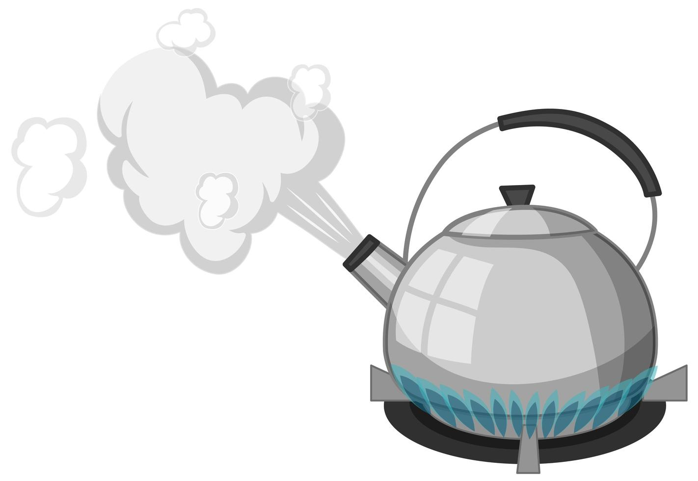
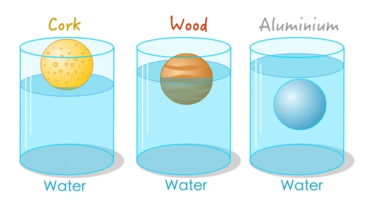
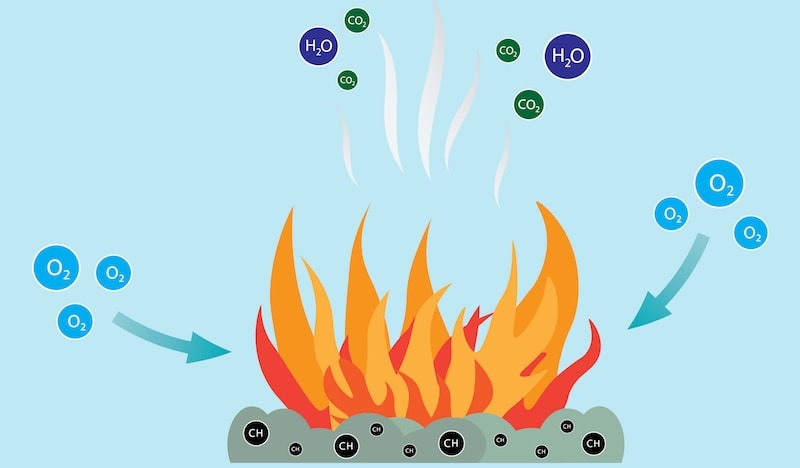
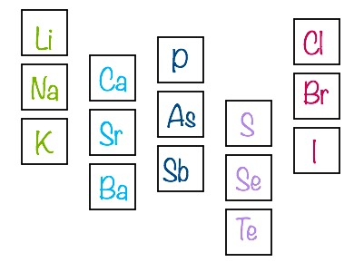
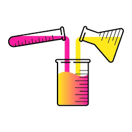
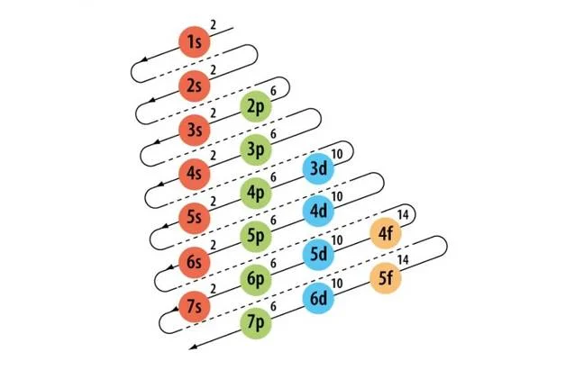
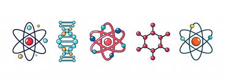
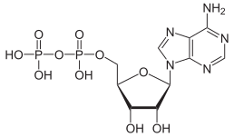

Materia
La materia es cualquier cosa que tiene masa y ocupa espacio. Está compuesta por átomos y moléculas y puede existir en diferentes estados.
Tipos de Estados:
- Sólido: Tiene una forma definida y un volumen fijo.
- Líquido: Tiene un volumen fijo pero toma la forma del recipiente que lo contiene.
- Gaseoso: No tiene forma ni volumen fijo, se expande para llenar el espacio disponible. 
- Plasma: Un estado ionizado de la materia, encontrado comúnmente en el sol y otros cuerpos celestes.
Las propiedades de la materia se dividen en:
- Propiedades Físicas: Se pueden medir sin cambiar la identidad de la sustancia, como el color, el punto de ebullición y la densidad. 
- Propiedades Químicas: Se observan durante una reacción química, como la reactividad con otros químicos, la acidez o la basicidad.
Los cambios en la materia pueden ser:
- Cambios Físicos: Alteran el estado o apariencia sin cambiar la composición química (ej., fusión, evaporación).
- Cambios Químicos: Alteran la composición química de la sustancia (ej., combustión, oxidación). 
La materia se clasifica en:
- Elementos: Sustancias puras que no pueden descomponerse en otras sustancias por métodos químicos. 
- Compuestos: Sustancias puras formadas por la combinación química de dos o más elementos.
- Mezclas: Combinaciones físicas de dos o más sustancias, que pueden ser homogéneas (soluciones) o heterogéneas. 
Video Recomendado
Tabla Periódica
La Tabla Periódica es una herramienta fundamental en la química que organiza todos los elementos químicos conocidos de manera sistemática según sus propiedades químicas y físicas.
Estructura:
- Filas (Períodos): Hay 7 filas horizontales, llamadas períodos, que indican el nivel de energía de los electrones en los átomos de los elementos.
- Columnas (Grupos o Familias):Hay 18 columnas verticales, llamadas grupos o familias, que agrupan elementos con propiedades químicas similares debido a su configuración electrónica similar.
Categorías de Elementos:
- Metales: La mayoría de los elementos son metales, ubicados a la izquierda y el centro de la tabla. Son buenos conductores de electricidad y calor.
- No Metales: Están situados en la parte superior derecha. Son malos conductores y tienen propiedades químicas variadas.
- Metaloides: Tienen propiedades intermedias y están ubicados a lo largo de la línea divisoria entre metales y no metales.
Bloques de Elementos:
- Bloque S: Incluye los grupos 1 y 2, y el hidrógeno y helio.
- Bloque P: Incluye los grupos 13 al 18.
- Bloque D: Incluye los elementos de transición, situados en los grupos 3 al 12.
- Bloque F: Incluye los lantánidos y actínidos, que están separados en dos filas debajo de la tabla principal.
Propiedades de los Elementos:
- Número Atómico: El número de protones en el núcleo del átomo, que también indica el orden del elemento en la tabla.
- Masa Atómica: El promedio ponderado de las masas de los isótopos naturales de un elemento.
- Símbolo Químico: Una abreviatura de una o dos letras que representa el elemento (por ejemplo, O para oxígeno).
Tabla
Enlace para Abrir la TablaVideo Recomendado
Configuración Electrónica
La configuración electrónica describe la distribución de electrones en los orbitales de un átomo. Es esencial para entender las propiedades químicas y el comportamiento de los elementos.

Principios Básicos:
- Números Cuánticos: Cada electrón en un átomo se describe por cuatro números cuánticos que indican su energía, forma, orientación y espín.
- Número cuántico principal (n): Indica el nivel de energía del electrón. Los valores posibles son 1, 2, 3, etc.
- Número cuántico azimutal (l): Define el tipo de subnivel (s, p, d, f) y determina la forma del orbital.
- Número cuántico magnético (m_l): Indica la orientación del orbital en el espacio.
- Número cuántico de espín (m_s): Representa el espín del electrón, que puede ser +1/2 o -1/2.
- Reglas de Aufbau: Los electrones llenan los orbitales desde el de menor energía al de mayor energía. La secuencia de llenado sigue el orden de los niveles y subniveles de energía.
- Principio de Exclusión de Pauli: En un átomo, no puede haber dos electrones con los mismos cuatro números cuánticos. En otras palabras, cada orbital puede contener hasta dos electrones, con espines opuestos.
- Regla de Hund: Los electrones se distribuyen en los orbitales degenerados (de igual energía) de tal manera que se maximiza el número de electrones con espines paralelos antes de emparejarse.
Configuración Electrónica de los Elementos:
- Determina el número atómico: Es el número total de electrones en un átomo neutro.
- Asigna los electrones a los orbitales siguiendo el orden de energía: Primero se llenan los orbitales más cercanos al núcleo.
Por ejemplo, la configuración electrónica del oxígeno (número atómico 8) es:
1s² 2s² 2p⁴
Esto significa que hay 2 electrones en el orbital 1s, 2 electrones en el orbital 2s, y 4 electrones en el orbital 2p.
Diagrama de Energía de Orbitales
Es útil visualizar la configuración electrónica usando diagramas de energía, como el diagrama de orbitales de Aufbau, para entender el orden de llenado de los orbitales.
Configuración Electrónica en la Tabla Periódica
La configuración electrónica también ayuda a entender la posición de los elementos en la tabla periódica y sus propiedades químicas. Los elementos en el mismo grupo tienen configuraciones electrónicas similares en su capa más externa, lo que resulta en comportamientos químicos similares.

Video Recomendado
Enlaces Químicos
Los enlaces químicos son las fuerzas que mantienen unidos a los átomos en las moléculas y compuestos. Existen varios tipos de enlaces, incluidos los enlaces covalentes, iónicos y metálicos.
Enlaces Iónicos:
- Descripción: Se producen cuando dos átomos comparten electrones. Este tipo de enlace se encuentra comúnmente entre no metales.
- Ejemplo: Cloruro de sodio (NaCl).

Enlaces Covalentes:
- Descripción: Se forman cuando un átomo dona electrones a otro, creando iones positivos y negativos que se atraen mutuamente. Este tipo de enlace ocurre típicamente entre metales y no metales.
- Ejemplo: Agua (H₂O), donde el oxígeno y el hidrógeno comparten electrones.

Enlaces Metálicos:
- Descripción: Se dan entre átomos de metales que comparten sus electrones en una red de núcleos positivos, creando una "nube" de electrones libres que mantiene unidos a los átomos.
- Ejemplo: Hierro (Fe), cobre (Cu).

Enlaces de Hidrógeno:
- Descripción: Un tipo especial de interacción que ocurre cuando un átomo de hidrógeno unido a un átomo muy electronegativo (como oxígeno o nitrógeno) forma un enlace débil con otro átomo electronegativo.
- Ejemplo: Las moléculas de agua (H₂O) se mantienen juntas por enlaces de hidrógeno.

Video Recomendado
Nomenclatura Inorgánica
La nomenclatura inorgánica es un sistema de reglas para nombrar compuestos químicos que no contienen carbono-hidrógeno. Incluye la nomenclatura de sales, ácidos, bases y óxidos.
Compuestos Iónicos:
- Sales Binarias: Formadas por un metal y un no metal. Ejemplo: Cloruro de sodio (NaCl).
- Sales Ternarias: Algunos compuestos covalentes tienen nombres históricos que se utilizan en lugar de sus nombres sistemáticos. Ejemplo: Agua para H₂O.

Compuestos Covalentes:
- Prefijos: Se usan para indicar el número de átomos en el compuesto. Ejemplo: Dióxido de carbono (CO₂).
- Nombres Comunes: Contienen más de dos elementos, típicamente un metal, oxígeno y un no metal. Ejemplo: Sulfato de cobre (II) (CuSO₄).

Ácidos:
- Ácidos Binarios: Formados por hidrógeno y un no metal. Ejemplo: Ácido clorhídrico (HCl).
- Ácidos Ternarios (Oxisales) Contienen oxígeno además del hidrógeno y otro elemento. Ejemplo: Ácido sulfúrico (H₂SO₄).

Bases:
Formadas por un metal y el grupo hidroxilo (OH). Ejemplo: Hidróxido de sodio (NaOH).
Sales:
Compuestos formados por la reacción de un ácido y una base. Ejemplo: Cloruro de potasio (KCl).

Video Recomendado
Oxianiones
Los oxianiones son iones que contienen oxígeno junto con otro elemento químico. Ejemplos comunes incluyen el ion sulfato (SO42-) y el ion nitrato (NO3-).
Estructura General:
Generalmente, los oxianiones tienen una estructura en la que el átomo central está rodeado por átomos de oxígeno en una disposición geométrica que puede ser tetraédrica, trigonal planar, etc. Los oxígenos pueden estar unidos al átomo central por enlaces simples o dobles.
Carga:
La carga del oxianión depende del número de oxígenos y del estado de oxidación del átomo central. Por ejemplo, el sulfato (SO₄²⁻) tiene una carga de -2 debido a la diferencia entre el número de electrones y el número de protones en el oxianión.
Propiedades Químicas:
Los oxianiones a menudo participan en reacciones redox y pueden actuar como agentes oxidantes o reductores dependiendo de la reacción. También tienen un papel importante en muchos procesos biológicos y ambientales.
Nomenclatura:
Los oxianiones suelen ser nombrados de acuerdo con el número de átomos de oxígeno y la carga total del ion. Por ejemplo, el ion sulfito (SO₃²⁻) tiene un átomo menos de oxígeno que el ion sulfato (SO₄²⁻).
Aplicación:
Los oxianiones tienen aplicaciones en diferentes áreas, como en la fabricación de productos químicos, en el tratamiento de aguas residuales, y en la agricultura como fertilizantes.
Ejmplos:
- Nitrato (NO₃⁻): Tiene una estructura trigonal planar con un átomo de nitrógeno central unido a tres átomos de oxígeno.
- Sulfato (SO₄²⁻): Tiene una estructura tetraédrica con un átomo de azufre central unido a cuatro átomos de oxígeno.
- Clorato (ClO₃⁻): Tiene una estructura trigonal plana con un átomo de cloro central unido a tres átomos de oxígeno.
Video Recomendado